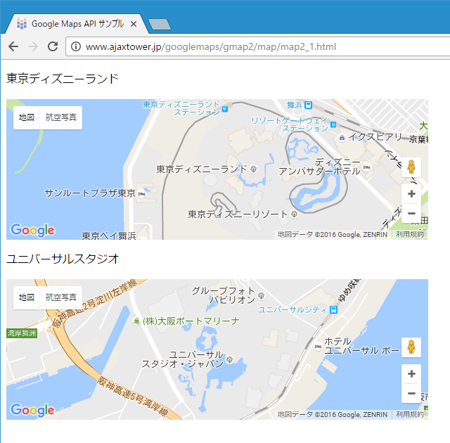

地図を作成する
地図を表示するにはgoogle.maps.Mapクラスを使います。ここではMapクラスを使って地図を作成する方法について解説します。
1.Mapクラス
2.MapOptionsクラス
3.setOptionsメソッドを使って座標などをあとから設定する
4.1つのWebページに複数の地図を表示する
5.サンプルコード
Mapクラス
地図を作成するにはgoogle.maps.Mapクラスを使います。このクラスのコンストラクタは次のように定義されています。
Map(mapDiv:Element, opts?:MapOptions)
Creates a new map inside of the given HTML container, which is typically a DIV element.
1番目の引数には地図を表示するdiv要素を指定します。2番目の引数には地図の座標やズームレベルなどを設定したMapOptionsクラスのオブジェクトを指定します。2番目の引数は省略可です(省略した場合はあとから中心座標とズームレベルを指定する必要があります)。
1番目の引数の指定の仕方ですが、Google Maps APIを使ってWebページの中に地図を表示する場合、地図を表示する位置にdiv要素を設置しておきます。
<body>
<p>目的地までの地図はこちらです。</p>
<div id="map" style="width:500px; height:300px"></div>
<p>地図をみても分からない場合はご連絡下さい。</p>
</body>
div要素に設定されたIDの値を使って次のように要素を取得できます。
var mapDiv = document.getElementById("map");
取得した要素をmapクラスのコンストラクタの1番目の引数に指定してMapクラスのインスタンスを作成することで地図を作成することができます。
var mapDiv = document.getElementById("map");
var map = new google.maps.Map(mapDiv);
または次のようにまとめて書いて頂いても同じです。
var map = new google.maps.Map(document.getElementById("map"));
MapOptionsクラス
Mapクラスを使って地図を作成する時、2番目の引数に地図の中心座標やズームレベル、地図の種類、コントロールの表示/非表示、といった情報を指定できます。中心座標とズームレベルのプロパティは必須です。値を設定したいプロパティを次のように記述して下さい。
var opts = {
プロパティ名1: 値1,
プロパティ名2: 値2,
プロパティ名3: 値3,
プロパティ名4: 値4,
プロパティ名5: 値5
};
中心座標を指定するプロパティは「center」です。値には座標を指定しますが、座標の指定にはLatLngクラスを使います。地図のズームレベルを指定するプロパティは「zoom」です。値にはズームレベルを数値で指定して下さい。数値が小さければ広域の地図となり、大きければより狭い範囲の詳細な地図となります。
実際の記述方法は次のようになります。下記では地図のズームレベルを13、地図の中心座標を(35.539001,134.228468)に設定しています。
var opts = {
center: new google.maps.LatLng(35.539001,134.228468),
zoom: 13
};
var map = new google.maps.Map(document.getElementById("map"), opts);
これで中心座標、ズームレベルの情報が設定された地図が作成されます。
setOptionsメソッドを使って座標などをあとから設定する
地図を作成する時に2番目の引数を指定しなかった場合や、後から座標などの設定を変更したくなった場合にはMapクラスで用意されているsetOptionsメソッドを使って設定します。
setOptions(options:MapOptions)
Description: ---- Return: None
引数に指定するオブジェクトは地図を作成する時の2番目の引数と同じものです。例えば次のように記述します。
var map = new google.maps.Map(document.getElementById("map_canvas"));
var opts = {
zoom: 13,
center: new google.maps.LatLng(35.539001,134.228468)
};
map.setOptions(opts);
地図を作成してから中心座標とズームレベルを設定しています。
1つのWebページに複数の地図を表示する
一つのWebページ内に地図を表示するためのdiv要素を複数記述し、それぞれ別の地図を表示させることもできます。div要素毎に異なるid属性を設定しておき、別々のMapクラスのインスタンスを作成します。
var mapDiv1 = document.getElementById("map1");
var mapDiv2 = document.getElementById("map2");
var opts1 = {
zoom: 13,
center: new google.maps.LatLng(35.697456,139.702148)
};
var opts2 = {
zoom: 10,
center: new google.maps.LatLng(34.694203,135.502625)
};
var map1 = new google.maps.Map(mapDiv1, opts1);
var map2 = new google.maps.Map(mapDiv2, opts2);
同じ要領で2つ以上の地図であっても同時に1つのWebページ内に表示可能です。
サンプルコード
では簡単なサンプルを作成して実際に試してみます。
function initMap() {
var opts1 = {
zoom: 15,
center: new google.maps.LatLng(35.6328964,139.8782003)
};
var opts2 = {
zoom: 15,
center: new google.maps.LatLng(34.6659803,135.4315818)
};
var map1 = new google.maps.Map(document.getElementById("map1"), opts1);
var map2 = new google.maps.Map(document.getElementById("map2"));
map2.setOptions(opts2);
}
<!DOCTYPE html>
<html lang="ja">
<head>
<meta charset="utf-8">
<title>Google Maps API サンプル</title>
</head>
<body>
<p>東京ディズニーランド</p>
<div id="map1" style="width:600px; height:200px"></div>
<p>ユニバーサルスタジオ</p>
<div id="map2" style="width:600px; height:200px"></div>
<script type="text/javascript" src="code2_1.js">
</script>
<script async defer
src="https://maps.googleapis.com/maps/api/js?key=APIKey&callback=initMap">
</script>
</body>
</html>
ブラウザでWebページを開くと次のように表示されます。

今回のサンプルでは2つの地図を1つのWebページ上に表示し、中心座標とズームレベルの指定方法を異なる方法で設定してみました。
( Written by Tatsuo Ikura )

著者 / TATSUO IKURA
初心者～中級者の方を対象としたプログラミング方法や開発環境の構築の解説を行うサイトの運営を行っています。